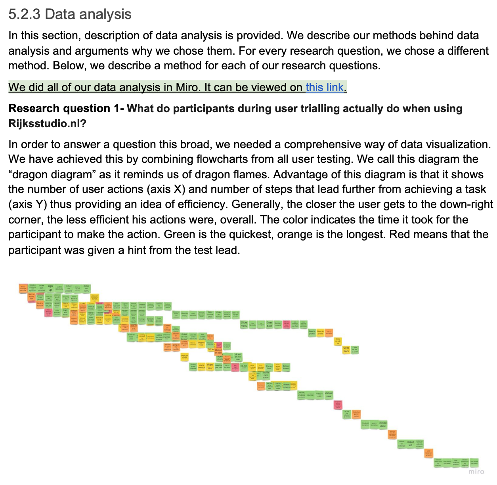
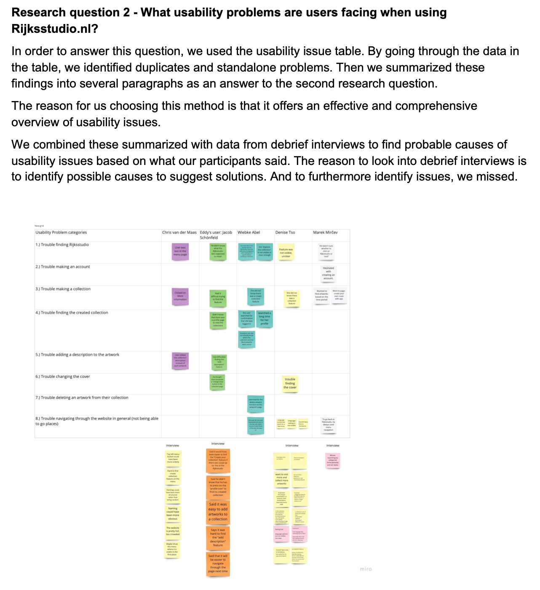

Reseach for Design: User Trailing
Role: Multi UX Designer
This course came after the Ethnographic course. The previous course was more of an individual work, and User Trailing was more of a group work. The main objective of this course was to target a specific useability function of the “Rijks Studio” website, and as a group we had to conduct user testing of the website.
As a group, we have decided to test the “making a personal collection” function of the website. The users were recruited to match our participant profile. The test was conducted online due to COVID-19. Within the user testing, there were always two team members: one for the test leader and one for the test observer. With the data collected, we were able to gather insights by comparing and contrasting the similarities and differences of the users. With the insights collected, our group as a whole came up with recommendations for the website to change / fix to increase the quality of User Experience.
Process
Step 1: Research Setup
In this stage, as a group we decided where and how we were going to user test the website as well as how we were going to record the data. It was also our responsibility to recruit participants which matched our profile and come up with the protocol for the testing which was going to be the same for all tests. The most important thing from this stage is coming up with our Research questions because this was going to be the foundation of the whole project.
Step 2: Data Collection & Analysis


The data was collected by screen recording the user’s view of their displays. A transcript was made to display everything that the participants said and did. The data that we gathered were made into a “Dragon Graph” which showcased the users experience with the website. Each of the boxes represented an action by the users, and whenever the colors were not green and stepped down, it represented that the users had encountered an usability issue. Other tables and graphs were also created to display other factors of the user testing.
Step 3: Conclusions & Recommendations
After looking about our analyzed data, we went back to the research questions and checked if our data had answered it in order for us to write a conclusion. We also came up with recommendations for the website to improve the quality of user experience which were made through our insights gathered during the testing.